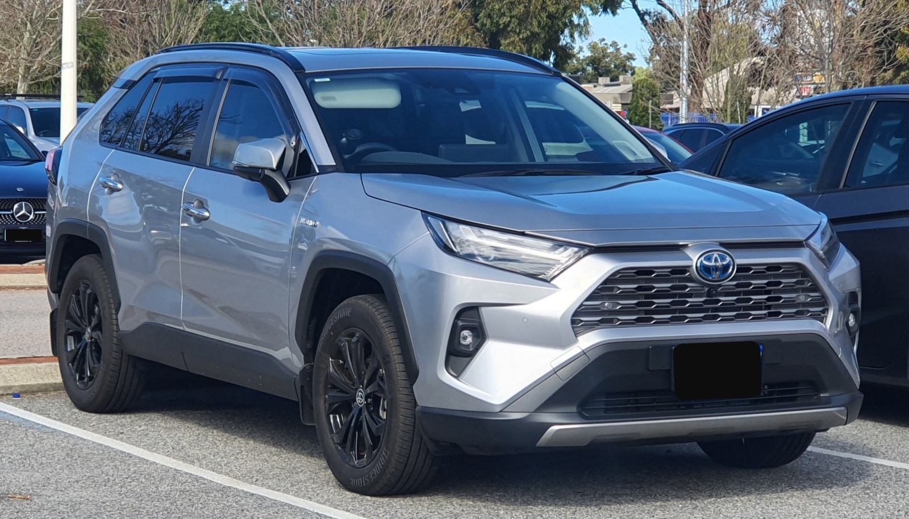

CS Math · Cornerstone II · Financing a Car
My five-year choice Camila Ortiz · Civil engineer (EIT)
A car payment that leaves room for a life in Miami
Fictional student · illustrative classroom model
Play the opening four slides straight as Camila's finished talk. Title: about 10 seconds; car: 35 seconds; comparison: 40 seconds; recommendation: 35 seconds. Stop the timed talk before the Teacher debrief divider. This is an authorized fictional exemplar, not an answer key to a private student profile. The November 16 brief supersedes the older lesson decks' dates and four-minute presentation structure. My decision · 1 of 3
I would buy the RAV4—and finance it for five years. 
Pictured: a Toyota RAV4 Hybrid
2022 MY Toyota RAV4 Hybrid facelift XA50 · Volardiculous · CC BY-SA 4.0 · via Wikimedia Commons. Resized/compressed; image remains CC BY-SA 4.0.
Model: new 2026 Toyota RAV4 LE Hybrid, Miami-Dade. Illustrative listing; pictured vehicle is a different model year. Illustrative listing for this exemplar; real projects link the actual Miami-Dade listing. No live listing or mileage claimed.
Out-the-door build Dollars Listed price $33,950.00 Florida tax · 6% $2,037.00 Surtax · 1% of first $5,000 $50.00 Dealer fee · assumption $999.00 Title/registration · assumption $400.00 Out the door $37,436.00
$5,000 down → $32,436 financed
Teacher: read as Camila: “The sticker is not my loan. I add the class tax model and labelled fees, then subtract my down payment.” Do not imply this is a verified dealer offer. Real submissions need a Miami-Dade listing URL, view date, screenshot and mileage. Photo attribution: 2022 MY Toyota RAV4 Hybrid facelift XA50 · Volardiculous · CC BY-SA 4.0 · via Wikimedia Commons. Resized/compressed; image remains CC BY-SA 4.0. Photo is a real 2022 RAV4 Hybrid, not evidence of the fictional 2026 listing. Tax computation is the supplied class model, not a dealer tax quote. The evidence · 2 of 3
The smallest payment carries the most interest. My salary: $64,000/year · gross ≈ $5,333.33/month · score 726, Prime
Term APR Monthly % of gross 3 yr 5.37% ≈ $977.53 ● ≈ 18.3%Tight 4 yr 5.47% ≈ $753.90 ● ≈ 14.1%Comfortable 5 yr ★ 5.62% ≈ $621.36 ● ≈ 11.7%Comfortable 6 yr 5.97% ≈ $537.10 ● ≈ 10.1%Comfortable 7 yr 6.42% ≈ $480.40 ● ≈ 9.0%Comfortable
Total loan interest ($) $0k $2k $4k $6k $8k 3 yr ≈ 2,755.21 4 yr ≈ 3,751.37 5 yr ≈ 4,845.81 6 yr ≈ 6,235.13 7 yr ≈ 7,917.69 Dollars · axis starts at $0
● <15% comfortable ● 15–20% tight ● >20% likely declined
Class lender guideline, not an approval guarantee. Rates: assigned profile; monthly-payment model assumes no separate finance fees. ★ My choice.
Teacher: 40 seconds. Read across the table, then point to the rising interest bars. Traffic lights use the unrounded payment divided by salary/12, not rounded displayed percentages. All five APRs come from the fictional profile. Explain that green describes only the payment/gross ratio: it does not include rent, taxes or ownership costs. Chart widths are drawn directly from the JSON total_interest values; axis starts at zero. No loan is red in this example. The recommendation · 3 of 3
Five years is my balance of breathing room and cost. ≈ $621.36 / month
≈ 11.7% of gross income · 5.62% APR
Purchase + financing Dollars Down payment $5,000.00 All loan payments ≈ $37,281.81 Total cost of the car ≈ $42,281.81 Interest included above ≈ $4,845.81
Four years fits the lender guideline, but leaves less room for rent and insurance. Five years is the shortest term below my ≈12% gross-income target. Seven years costs ≈$3,071.88 more interest. My limitation: these are class-model rates and an insurance estimate, not personal offers. Higher actual costs could change my choice.
Purchase + financing excludes running costs: insurance, fuel, maintenance and SunPass add ≈$487.18/month. I carry those into my budget separately.
Teacher: 35 seconds. End the student talk here. Do not multiply the rounded $621.36 display by 60 to reconstruct the total: the workbook keeps the unrounded PMT result. Camila does not call a longer loan cheaper. Insurance $310 is supplied as a classroom average in the brief, but no publication is identified in the JSON; do not invent a citation or claim it was verified. Real students must cite a published Miami average for a 25-year-old. Act II · Teacher debrief
Teacher debrief The talk is finished.
Teacher: this divider is outside the two-minute presentation. The following views are HTML teaching diagrams using the actual companion workbook cell addresses, labels, formulas and tab names. Selected rows are shown; these are teaching excerpts, not screenshots. The worked numbers belong only to the fictional persona. Workbook tour · 1 of 3
Profile & Car: inputs have a home. Camila Ortiz · Cornerstone II · Profile & Car · selected rows
B34 ƒx =$B$25+$B$32+$B$33+$B$29+$B$30
A B C D 9 Gross salary ($/yr) $64,000 Teacher-issued credit profile (fictional exemplar) 16 Gross monthly income ≈ $5,333.33 Formula — follows labelled inputs 25 Listed price ($) $33,950 Dealer listing (illustrative for this exemplar) 26 Florida sales tax rate 6% Florida Dept. of Revenue: 6% state tax; county surtax only on the first $5,000 of a single item. https://floridarevenue.com/taxes/taxesfees/… 27 Miami-Dade surtax rate 1% Florida Dept. of Revenue: 6% state tax; county surtax only on the first $5,000 of a single item. https://floridarevenue.com/taxes/taxesfees/… 28 Surtax applies to the first ($) $5,000 Florida Dept. of Revenue: 6% state tax; county surtax only on the first $5,000 of a single item. https://floridarevenue.com/taxes/taxesfees/… 29 Dealer fee ($) $999 Assumption: typical Florida dealer fee (Florida sets no cap) 30 Title & registration ($) $400 Assumption: Florida title + first registration estimate 31 Down payment ($) $5,000 My choice, above the $4,000 class minimum 32 Florida sales tax ($) $2,037 Formula — follows labelled inputs 33 Miami-Dade surtax ($) $50 Formula — follows labelled inputs 34 Out-the-door price ($) $37,436 Formula — follows labelled inputs 35 Amount financed ($) $32,436 Formula — follows labelled inputs 41 36-month new APR 5.37% Fictional class credit profile; term-adjusted model based on Experian Q2 2026; not a lender offer 42 48-month new APR 5.47% Fictional class credit profile; term-adjusted model based on Experian Q2 2026; not a lender offer 43 60-month new APR 5.62% Fictional class credit profile; term-adjusted model based on Experian Q2 2026; not a lender offer 44 72-month new APR 5.97% Fictional class credit profile; term-adjusted model based on Experian Q2 2026; not a lender offer 45 84-month new APR 6.42% Fictional class credit profile; term-adjusted model based on Experian Q2 2026; not a lender offer
READ ME Profile & Car Loan Options Amortization Cost to Own Recommendation
Selected rows; skipped row numbers mark omitted rows. Labels in A · values in B · sources in D.
Teacher: these teaching excerpts now use the actual workbook addresses and labels. Sources are clipped visually in column D, as in a narrow spreadsheet column; open the workbook for the full source text. Gross monthly income B16: =$B$9/12. Florida tax B32: =$B$25*$B$26. Surtax B33: =MIN($B$25,$B$28)*$B$27. Amount financed B35: =$B$34-$B$31. Point at the cap in B28. APR inputs are B41:B45. Down payment B31 is editable. Real students also record their listing URL, date, screenshot and mileage. Workbook tour · 2 of 3
Loan Options: one formula, five terms. Camila Ortiz · Cornerstone II · Loan Options · selected rows
C7 ƒx =IF(B7=0,'Profile & Car'!$B$35/A7,-PMT(B7/12,A7,'Profile & Car'!$B$35))
A B C D E F G 4 Term (months) APR Payment ≈ Total paid ≈ Total interest ≈ Total car cost ≈ Payment / gross 5 36 5.37% ≈ $977.53 ≈ $35,191.21 ≈ $2,755.21 ≈ $40,191.21 ≈ 18.3% 6 48 5.47% ≈ $753.90 ≈ $36,187.37 ≈ $3,751.37 ≈ $41,187.37 ≈ 14.1% 7 60 5.62% ≈ $621.36 ≈ $37,281.81 ≈ $4,845.81 ≈ $42,281.81 ≈ 11.7% 8 72 5.97% ≈ $537.10 ≈ $38,671.13 ≈ $6,235.13 ≈ $43,671.13 ≈ 10.1% 9 84 6.42% ≈ $480.40 ≈ $40,353.69 ≈ $7,917.69 ≈ $45,353.69 ≈ 9.0% 10 Chosen term (months) 60 Choose 36, 48, 60, 72 or 84; drives schedule and budget 12 Chosen payment ≈ $621.36 Formula — follows labelled inputs
READ ME Profile & Car Loan Options Amortization Cost to Own Recommendation
B10 selects the term. Conditional formatting: G5:G9. Formats round loan displays; formulas retain full precision.
Teacher: select C7. A7 is 60 months; B7 is the five-year APR. IF handles a zero APR; otherwise PMT uses the monthly rate. The financed reference stays absolute. B12 uses INDEX/MATCH to return the selected payment, rather than always reading the five-year row. Header row is 4. Rows 11 and 13 onward are omitted here. The long source in D10 extends across empty adjacent cells in this teaching view. Workbook tour · 3 of 3
Amortization: every row hands off its balance. Camila Ortiz · Cornerstone II · Amortization · selected rows
C12 ƒx =IF(A12="","",B12*$B$6/12)
A B C D E F 11 Month Opening balance Interest Payment Principal Closing balance 12 1 ≈ $32,436.00 ≈ $151.91 ≈ $621.36 ≈ $469.45 ≈ $31,966.55 13 2 ≈ $31,966.55 ≈ $149.71 ≈ $621.36 ≈ $471.65 ≈ $31,494.89 71 60 ≈ $618.47 ≈ $2.90 ≈ $621.36 ≈ $618.47 ≈ $0.00 72
READ ME Profile & Car Loan Options Amortization Cost to Own Recommendation
All three checks return TRUE. Month 60 is row 71; rows 72–95 are blank for this term. Other schedule rows omitted.
Teacher: inputs B5:B9 feed the schedule; B5 links directly to Profile & Car and B6:B9 link to the selected Loan Options outputs. Header row is 11; the first month is row 12. B12: =IF(A12="","",$B$5). D12: =IF(A12="","",$B$8). E12: =IF(A12="","",D12-C12). F12: =IF(A12="","",B12-E12). A13: =IF(2<=$B$7,2,""). B13: =IF(A13="","",F12). The IF guards leave rows past the chosen term blank, not zero. Check cells B96:B98 test differences below half a cent across the full 84-row table. Principal totals ≈ $32,436.00; interest totals ≈ $4,845.81; final balance ≈ $0.00. Do not type a zero into the balance. Rubric · Evidence, not decoration
The evidence behind each Advanced criterion. Model Correctness
Five term-specific APRs; correct OTD cap; payments, totals and schedule reconcile.
Formula Honesty
PMT, totals and row-to-row balances depend on input cells; full precision is retained.
Data Structure
Named tabs separate profile/car inputs, the comparison and the monthly schedule.
Sources & Assumptions
Illustrative inputs and photo provenance are explicit; estimates are not presented as quotes.
Communication
Decision first; three content slides; $0-based chart; total cost and a meaningful limit.
Live Defense
Predicts the effect of less down, traces the formulas and checks the updated schedule.
4 Advanced · 3 Proficient · 2 Developing · 1 Beginning. Grade = average of scored criteria, to one decimal; never points.
Teacher: the exemplar demonstrates the intended Advanced behaviors; a polished deck alone does not prove the workbook or live-defense criteria. Test the actual workbook. Sources & Assumptions has an explicit exemplar exception: the listing and ownership figures are supplied classroom inputs. Real students need a real listing and published insurance/mpg evidence; do not award source credit for an unsupported “average.” No optional stretch is required to earn a 4. Live defense · One input, many linked outputs
“What if I put $4,000 down instead?” Teacher changes one input 'Profile & Car'!B31: $5,000 → $4,000
Camila predicts
“I borrow more. Every term’s payment and total interest rise; payment as a share of income rises too.”
Camila traces
“B35 is OTD minus B31. Loan Options computes the payment; B12 selects it for my schedule. I did not edit the payment.”
What stays fixed
“Same car, OTD price, salary, APRs and terms. Insurance and fuel do not change.”
What I check
“The loan starts higher but still ends near zero. Total purchase + financing rises because interest rises.”
Amount financed: $33,436.00 · 60-month payment: ≈ $640.52/month
Teacher: change only the down-payment input in the actual workbook. Ask for a prediction before recalculating. The direction of every statement follows PMT being proportional to principal at a fixed rate and term. The reduction in down payment is offset by extra principal repaid, so only added interest raises purchase-plus-financing cost. Check all three schedule reconciliations, then restore $5,000. At 5.62% APR over 60 months, payment = principal × monthly rate / (1 − (1 + monthly rate)^(-60)); with $33,436.00 financed, payment is 640.520068186088 before display rounding. Loan Options!B10 stays at 60. Restore Profile & Car!B31 to $5,000 afterward. Recap · Audit before rehearsal
Common ways to lose a level. Failure Repair that earns evidence Type the monthly payment Use PMT; change down payment and watch the schedule update. Apply surtax to the whole car Use MIN(listed price, cap) × surtax rate. Call the lowest payment “cheapest” Compare total interest and total purchase + financing cost. Call an estimate a researched fact Label it; real submissions need listing and published cost evidence. Round cells before multiplying Format to cents; retain precision in formulas. Explain only what changed Point to the input, dependency and formula; explain why.
Ownership travels into CS III: insurance $310 · fuel ≈$87.18 · maintenance $50 · SunPass $40 → ≈$487.18/month, plus the payment.
Fuel: 1,000 miles/month ÷ 39 mpg × $3.40/gal. Supplied classroom inputs; no insurance publication or EPA vehicle record is provided in the source JSON.
Teacher: use this as an audit, not an automatic one-level penalty table. Diagnose the criterion and the evidence. Ownership belongs in a separate monthly block with live links into CS III. For this model fuel is miles/mpg × price; insurance, maintenance and tolls are labelled inputs. Students must replace illustrative provenance with their required real sources. Never imply that the Commons photo verifies a listing, price, fuel economy or insurance premium. Cornerstone II · Presentations
Monday, November 30 2 minutes each · title + exactly 3 content slides
Workbook + slides due at the start of class · then one question
The workbook is the work. The talk makes the decision clear.
Teacher: work sessions are November 16, 17 and 19. Aim to finish in class before Thanksgiving break; no break work is required. Present first thing Monday 11/30. Allow about 30 seconds for one question per student, with any overflow Tuesday 12/1. Keep the teacher-debrief slides out of students' two-minute talks. CS III continues in new tabs of this same workbook with live links to payment and ownership costs.